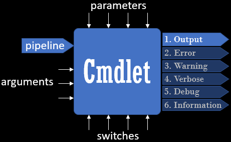

Egy parancsmag a bemeneti adatokból egy vagy több eredmény-objektumot állít
elő. Az eredmények alapértelmezetten az Output kimeneti adatfolyamba kerülnek,
ahonnan továbbhaladhatnak a csővezetéken, vagy az előírt elrendezésben
szöveggé alakítva megjeleníthetők a képernyőn, adatállományba írhatók,
esetleg kinyomtathatók vagy el is dobhatók.

Cmdlet
Az Output adatfolyamot általában a kimeneti objektumoknak tartjuk fenn,
amelyekkel további műveleteket végzünk. A felhasználó tájékoztatása végett
azonban további információs csatornák léteznek a hibajelzésre (Error),
figyelmeztetésre (Warning), részletes jelentésre (Verbose), futásellenőrzésre
(Debug), és végül a felhasználóval való általános kommunikációra
(Information). A Write paranccsal ezekre az adatfolyamokra
közvetlenül is küldhetünk üzenetet.
Get-Help Write-*
Nem minden adatfolyamra küldött üzenet jut el a parancssori ablakot felügyelő
Host gazdaprogramhoz, ennélfogva nem minden adatfolyam tartalma
olvasható közvetlenül a képernyőn.
Write Message to Streams
Ahhoz, hogy a különböző adatfolyamok tartalmát láthatóvá tegyük, át kell
irányítani azokat egy hozzáférhető csatornába. Ekkor az is láthatóvá válik,
hogy a gazdaprogram – a felhasználó beállításainak megfelelően –
milyen színekkel teszi feltűnőbbé a különféle adatfolyamok megjelenített
tartalmát.
Write Streams from Function